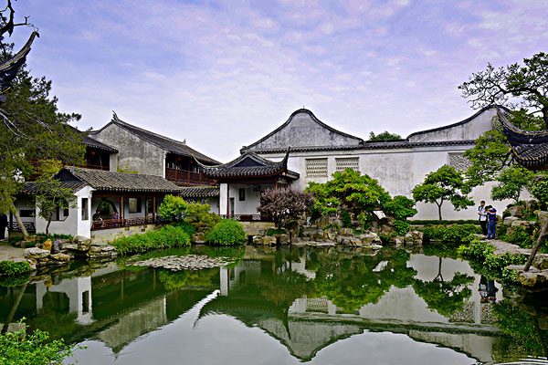
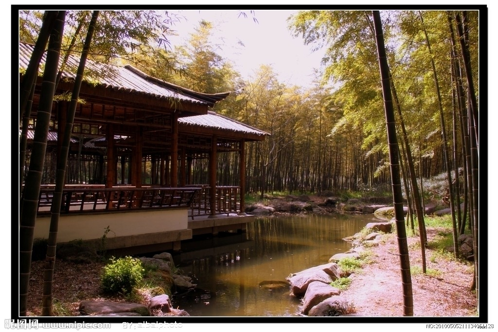
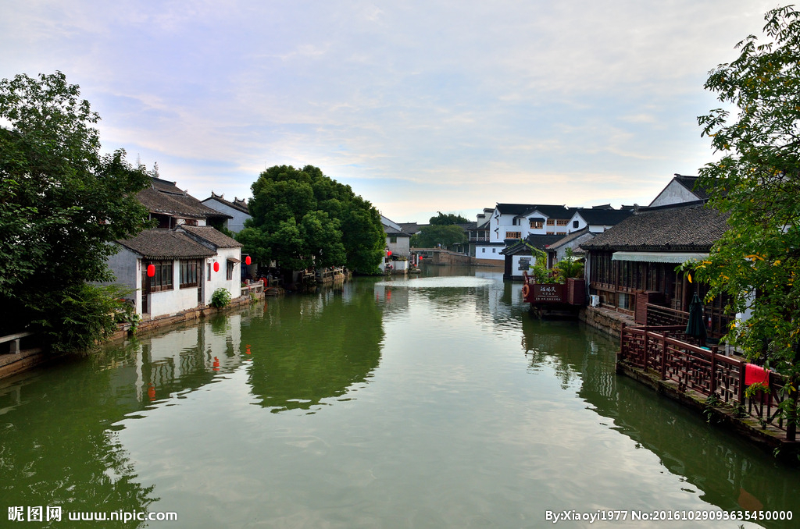

2019-04-12
再大的伤痛，睡一觉就把它忘了，背着昨天追赶明天，会累坏了每一个当下。烦恼不过夜，健忘才幸福。
真正能让你倒下的，不是对手，而是自己内心的绝望。时间可以愈合一颗破碎的心，也许只有夜晚一床温暖的棉被和一个好梦，才可以慰藉每天有太多不如意的我们！
2019-02-18
我的小可爱们今天特别开心！


2018-12-20
洛阳龙门石窟的石窟和佛龛展现了中国北魏晚期至唐代（公元493年～907年）期间，最具规模和最为优秀的造型艺术。
这些详实描述佛教中宗教题材的艺术作品，代表了中国石刻艺术的最高峰。
是人类艺术创造力的杰出表现；是对悠久历史的艺术形式的完美展现；也是对中国唐朝高度的文化水平和成熟的社会的展现。
2018-09-12
看清一个人又何必去揭穿；讨厌一个人又何必去翻脸。活着，总有看不惯的人，就如别人看不惯我们。
人的成熟不是年龄，而是懂得了放弃，学会了圆融，知道了不争。
有些苦衷不言痛，不是没感觉，而是知道说与不说都一样；那些暗伤，不是不在乎，而是懂得了慢慢修复。
2018-05-03
淡看人间事，潇洒天地间。再幸福的人生也有缺憾，再凄凉的人生都有幸福。潇洒的人生，要学会淡看缺憾，随缘而动。
静听流水的声音，静品流年的韵味，心中有爱，人就健康；心中有美，人就善良；心中有真，人就坦诚；心中有德，人就有底线；心中有光明，人就有信念。

2018-01-29
人生就像是新闻联播，不是换台就可以逃避的。我们必须接受失望，人的一生，总是难免有浮沉。
不会永远如旭日东升，也不会永远痛苦潦倒。反复地一浮一沉，对于一个人来说，正是磨练。因此，浮在上面的的，不必骄傲；沉在底下的，更用不着悲观。
2018-01-22
都说上有天堂，下有苏杭，一点没错，苏州园林真的好美呀！




2017-12-16
一件事，就算再美好，一旦没有结果，就不要再纠缠，久了你会累；一件物，就算再留念，如果你留不住，就要适时放手，久了你会心碎。
有时，放弃是另一种坚持，你错失了夏花绚烂，必将会走进秋叶静羌。任何事，任何人，都会成为过去，不要跟它过不去，无论多难，我们都要学会抽身而退。
2017-09-09
我们总羡慕别人的幸福，却常常忽略自己生活中的美好。其实，幸福很平凡也很简单，它就藏在看似琐碎的生活中。
幸福的人，并非拿到了世界上最好的东西，而是珍惜了生命中的点点滴滴，用感恩的心态看待生活，用乐观的态度闯过磨难。
2017-07-19
在问题出现的那一瞬间，一定要控制好自己的情绪，不要发火，不要偏激，不要说出什么过激的话，要懂得忍耐。
忍耐不是为了让你不去处理这件事情，而是为了避免在情绪失控的情况下，干出什么让自己后悔的事情。
以后你就会知道，生活中真的没有几件事情是值得我们搭上礼貌，教养，人品和格局的。
2017-03-11
弯得下腰，才抬得起头。在人生路上，不是所有的门都很宽阔，有的门需要你弯腰侧身才进得去。
所以，必要时要能够弯得下自己的腰，才可能在人生路上畅通无阻。抬头需要底气，弯腰需要勇气。
每个人的生存空间都是有限的，一味高昂着头，必然要碰得头破血流。能够适时地弯下腰，才是人生大智慧。
2017-03-10
人这一辈子，机遇难同，因缘各异，一帆风顺也好，跌宕起伏也罢，平淡普通，都是自己的命运。
那些走过的，偶遇的，相逢的，别离的，都是唯一。无论处于何种境地，都不要抱怨世态，不能放弃底线，不必嫉恨他人。